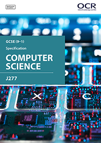

GCSE in Computer Science is engaging and practical, encouraging creativity and problem solving. It encourages students to develop their understanding and application of the core concepts in computer science. Students also analyse problems in computational terms and devise creative solutions by designing, writing, testing and evaluating programs.
Introduces students to the central processing unit (CPU), computer memory and storage, data representation, wired and wireless networks, network topologies, system security and system software. It also looks at ethical, legal, cultural and environmental concerns associated with computer science.
50%
Students apply knowledge and understanding gained in component 01. They develop skills and understanding in computational thinking: algorithms, programming techniques, producing robust programs, computational logic and translators.
50%
Students are to be given the opportunity to undertake a programming task(s) during their course of study which allows them to develop their skills to design, write, test and refine programs using a high-level programming language. Students will be assessed on these skills during the written examinations, in particular component 02 (section B).